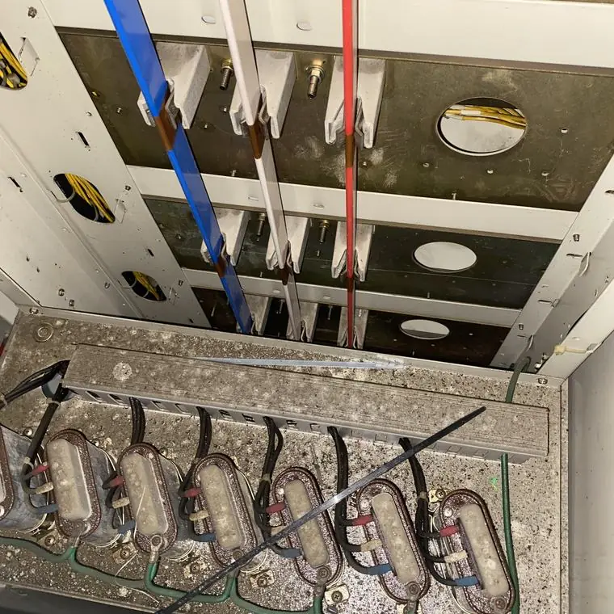
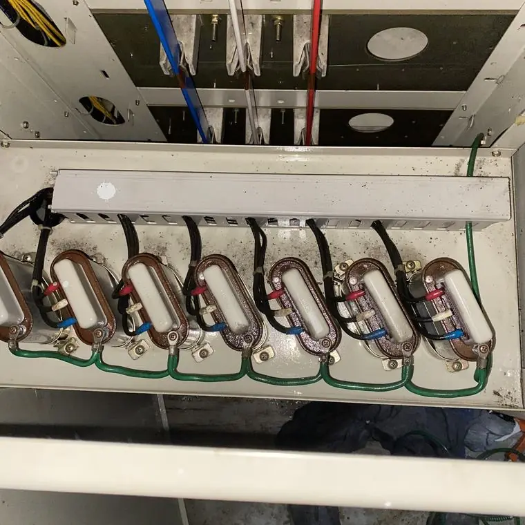

공장 전기설비는 어떻게 관리하나요?
최종 수정 2026-11-09
공장은 분진과 금속 가루가 많아 제어반과 수배전반이 빨리 오염될 수 있습니다. 가동 중단 손실을 줄이기 위해 점검 주기를 정하고, 생산 제어반은 1~2년 주기 청소를 권하는 자료를 참고해 전문 업체와 계획하세요.
왜 중요한가요?
- 금속성 분진은 누설과 합선의 위험이 있습니다.
- 정지 사고는 생산 손실로 이어집니다.
작업 전

작업 후

계획
- 설비 목록과 면 수 정리
- 주말·야간 작업 일정
- 전기안전관리자 협의
안전
전기설비를 직접 물이나 일반 세제로 청소하는 것은 감전·단락 위험이 있어 권하지 않습니다. 반드시 전문 업체와 전기안전관리자에게 먼저 확인하세요.
자주 묻는 질문
생산을 멈춰야 하나요?
설비와 현장에 따라 다릅니다. 상담에서 확인하세요.
여러 면을 한꺼번에 하나요?
규모와 일정에 맞춰 나눠서 할 수 있습니다.
설비 사진과 정보를 남기시면 확인 후 견적을 안내해 드립니다.
무료 견적 문의하기이 글은 시공 업체가 공개한 자료와 일반적인 전기설비 관리 상식을 바탕으로 작성했습니다. 설비별 적용 여부와 결과는 현장 확인 후 달라질 수 있습니다.